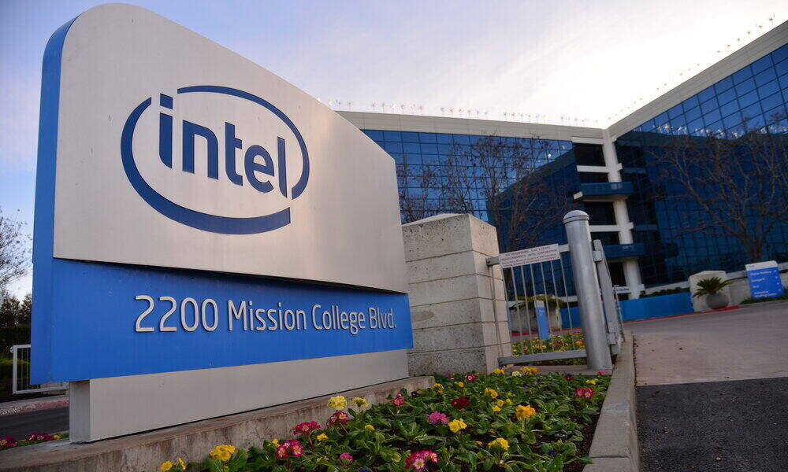

Ya que soy fan de las computadoras, me gustaria formar parte de algunas empresas como lo son Intel y las diferentes empresas dedicadas al hardware, para asi poder trabajar desde dentro en las computadoras, otra de las empresas que siempre he admirado son Google pues, me encanta el ambiente laboral que manejan.

En algo mas personal, mi otra pasion son los videojuegos competitivos, algo en lo que me gusta estar mejorando continuamente, sin duda es un sueño formar parte de algun equipo profesional ya sea como jugador o como staff, actualmente mi juego principal es Valorant, un shooter tactico 5 contra 5 de Riot Games.